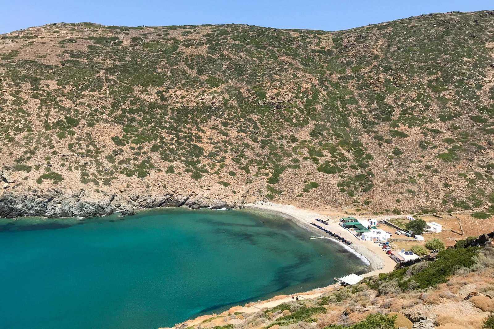
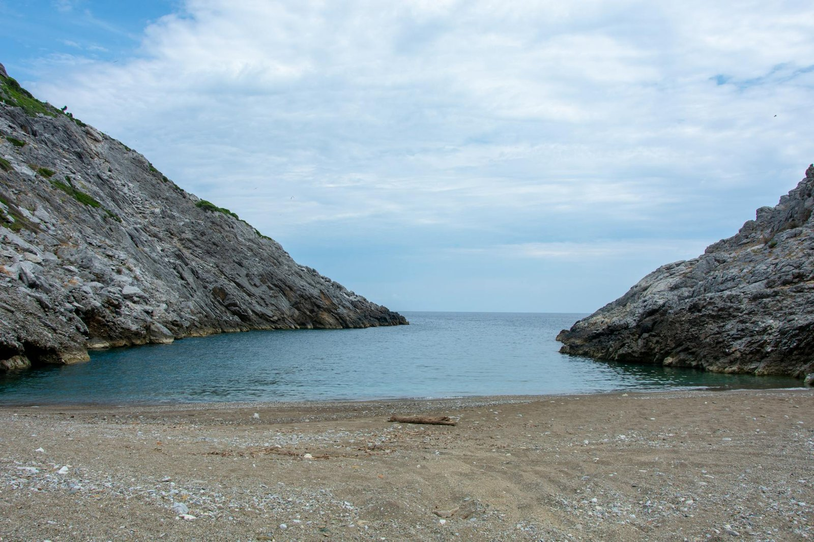
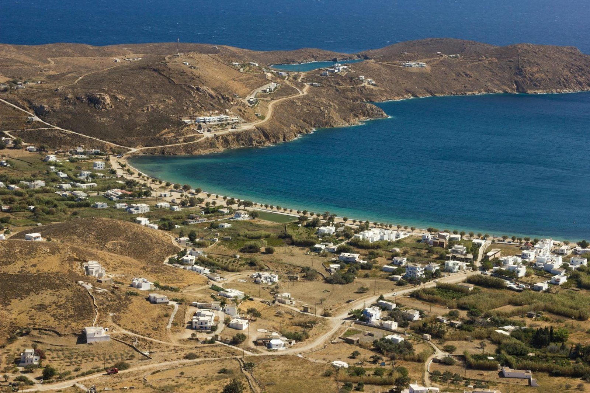
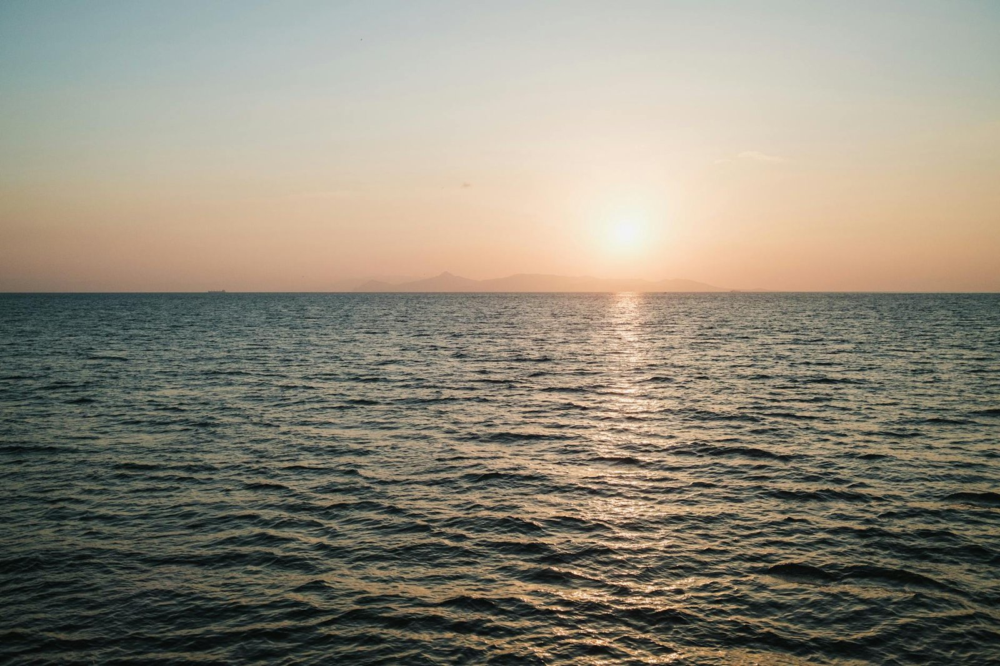

Kythnos rewards swimmers with variety. The island's coastline shifts from organized beaches with sunbeds and tavernas to wild stretches where you might be the only person on the sand. The water is consistently clear, often startlingly blue, and the beaches themselves range from a famous double-sided sandbar to quiet coves tucked between rocky headlands. Some beaches you can drive to directly, others require a short walk or a boat ride. The island's compact size means you can easily visit several beaches during your stay, finding the balance between convenience and solitude that suits your mood each day.
Kolona is the beach that appears in every photograph of Kythnos, and for good reason. A long, narrow sandbar extends from the main island to the small islet of Agios Loukas, creating a natural causeway with sea on both sides. You can wade or swim between the two bodies of water, feeling the temperature shift as you cross from one side to the other. The beach is unorganized, so bring what you need for the day. The sand is fine and pale, the water shallow enough for children on both sides, and the view from the sandbar itself is the kind of thing that makes you understand why people keep coming back to the Greek islands.
Fykiada sits near Kolona but feels entirely different. The sand here is golden rather than pale, and the beach remains wild and unorganized. You reach it either on foot from nearby or by boat, which keeps the crowds thin even in high season. The lack of facilities means you need to plan ahead, but the reward is a stretch of sand that often feels like your private discovery. The water is as clear as anywhere on the island, and the beach's relative isolation makes it a good choice when the more accessible spots are busy.
Episkopi is the organized option on the northwest coast, positioned between Kolona and the port of Merichas. Sunbeds are available here, along with the shade and services that make a long beach day easier. The beach attracts families and visitors who prefer having facilities close at hand. The water is calm and clear, and the beach's position makes it easy to combine with visits to other nearby spots. If you want the convenience of an organized beach without traveling far from the main settlements, episkopi delivers.
Apokrousi is one of the largest beaches on Kythnos and consistently ranks among the best in the Aegean. The water here is an almost implausible shade of blue, clear enough to see the sandy bottom even when you are swimming well offshore. The beach sits near Episkopi on the northwest side, and its size means it can absorb visitors without feeling crowded. The combination of space, water quality, and accessibility makes Apokrousi a strong candidate for your first swim on the island.
Loutra offers something no other beach on Kythnos can match: thermal springs that release warm, mineral-rich water directly into the Aegean. You can feel the temperature change as you swim through different areas of the bay, moving between pockets of warm spring water and cooler seawater. The therapeutic properties of the springs have attracted visitors for centuries, and the small settlement of Loutra maintains a quiet, slightly old-fashioned atmosphere. The beach itself is modest, but the thermal waters make it worth the visit, especially if you are curious about the island's geological quirks.
Martinakia is a small beach close to Merichas, the island's main port. Its proximity to the port makes it one of the easiest beaches to reach, useful if you are arriving late or leaving early and want to fit in a quick swim. The beach is small and the facilities are basic, but the water is clean and the location is convenient. Martinakia works well as a fallback option or for a morning swim before catching a ferry.
Kanala, also known as Megali Ammos or Great Sand, sits on the east side of the island near the Panagia Kanala church. The beach is family friendly, with calm water and enough space for children to play safely. The presence of the church adds a point of interest beyond the beach itself, and the combination makes Kanala a good choice for a half-day outing that mixes swimming with a bit of sightseeing. The beach has a gentle, unhurried feel, and the east coast location means you can often find afternoon shade earlier than on west-facing beaches.
Agios Stefanos is a quieter option on the island, less visited than the beaches on the northwest coast. The beach offers a more secluded swimming experience, with clear water and a peaceful atmosphere. Reaching Agios Stefanos requires a bit more effort than the main beaches, which filters out casual visitors and rewards those who make the trip with a sense of discovery.
Lefkes is another of the island's smaller, less developed beaches. The lack of organization means you need to bring supplies, but it also means the beach retains a natural, unspoiled character. The water is clean, the setting is pleasant, and the relative quiet makes Lefkes a good choice when you want to escape the busier spots without traveling to the far edges of the island.
Flampouria rounds out the options on the east and southern parts of the island. Like Lefkes and Agios Stefanos, flampouria is unorganized and quiet, appealing to swimmers who prefer beaches without facilities or crowds. The water quality matches the rest of the island, and the beach's position makes it a viable alternative when the more popular beaches are full.
Naoussa, sometimes called Aosa, is small and picturesque, tucked away from the main beach circuit. The beach's modest size and low profile mean it rarely gets crowded, even when other beaches are busy. Naoussa offers a simple, unadorned beach experience, the kind of place where you can spend a few hours swimming and reading without distraction.
Start with Kolona for the iconic experience and Apokrousi for the water quality. If you want facilities, head to Episkopi. For something different, try the thermal springs at Loutra or the family-friendly setup at Kanala. The wild beaches like Fykiada, lefkes, and Flampouria reward visitors who prefer solitude over convenience. Most beaches are accessible by car or a short walk, and the island's size makes it easy to visit several during your stay. Pay attention to wind direction: sheltered beaches on the east coast often stay calm when northwest beaches have waves, and vice versa.


The island's iconic double-sided sandbar connects Kythnos to Agios Loukas islet with sea on both sides.

One of the largest beaches with clear blue water, among the best in the Aegean near Episkopi.

Organized beach with sunbeds on the northwest side, located between Kolona and Merichas port.

Unique beach where thermal springs release warm mineral water that mixes with the Aegean Sea.

Small and picturesque beach offering a quiet retreat for visitors seeking natural beauty.

Wild and unorganized beach with golden sand near Kolona, accessible on foot or by boat.

Family-friendly beach on the east side near Panagia Kanala church, also called Megali Ammos.

Small beach located close to Merichas port, convenient for visitors staying in the area.
Peaceful beach on Kythnos offering clear waters and a tranquil setting for relaxation.
Secluded beach on Kythnos providing a quiet escape surrounded by natural Cycladic landscape.
Quiet beach on Kythnos where visitors can enjoy unspoiled coastal scenery and calm waters.